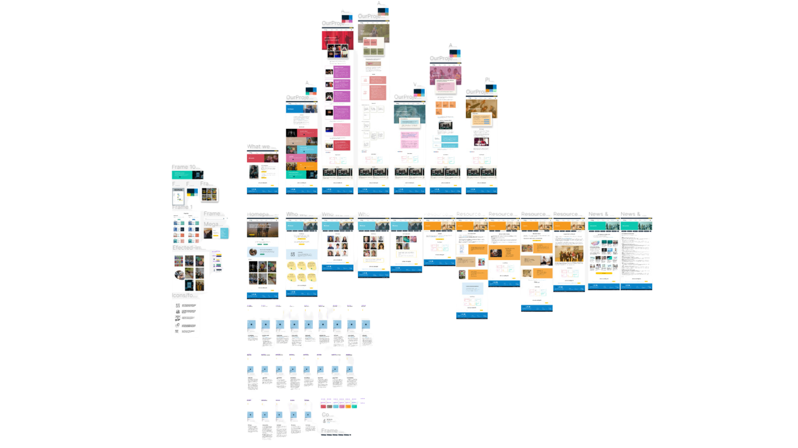
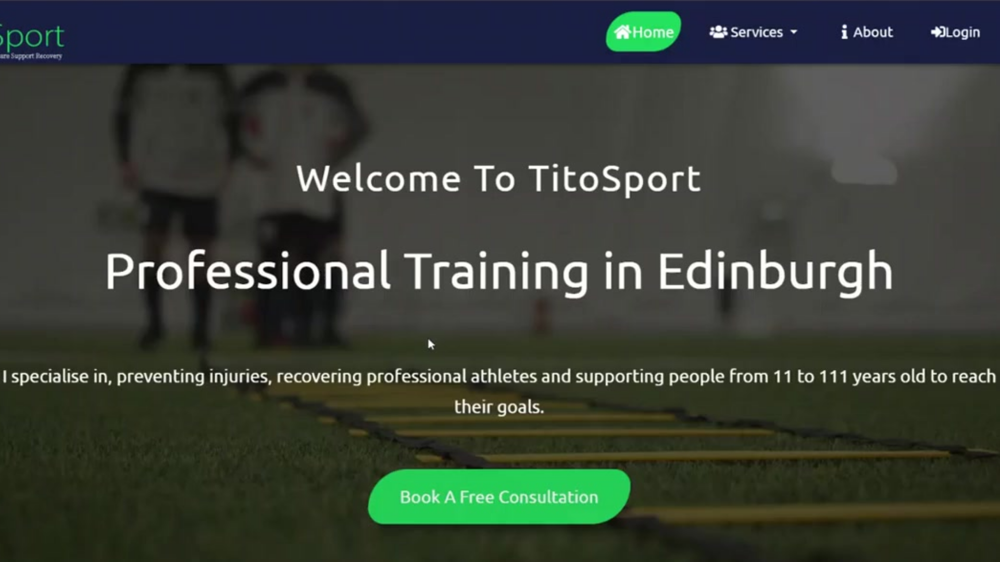
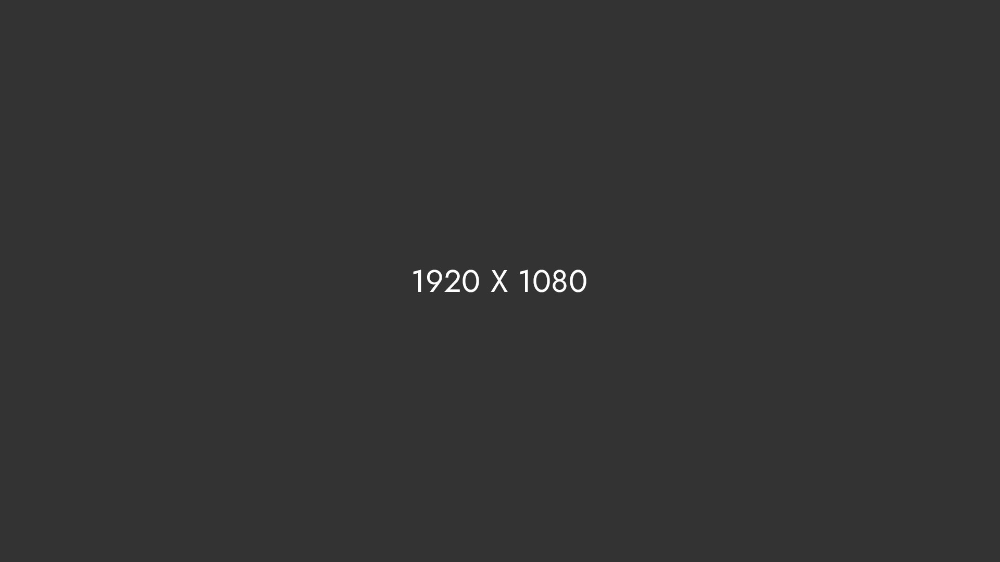

I am a curious explorer on a mission to make things better! I love learning and finding ways to make products awesome while understanding what users really want.
I’m Violeta Lazarova.
-
Download CV
Hello, I'm a creative professional passionate about UX research, skilled in web development, experianced in UX design and interested in digital business.
Throughout my university studies and freelance work, I've been involved in various web design and development projects. My involvement spans the entire spectrum of web business creation – encompassing research, analysis, social media creation, web design, website development, search engine optimization, and user testing. Check out my portfolio below!


Portfolio
-
UX Disign Fast Forward
Project Info
Fast Forward
During my internship at Fast Forward, I played a crucial role in the website reviewer project. Joining the project midway, I quickly grasped the previous work through a brief paperwork analysis. Throughout my time on the project, I worked independently, meticulously documented progress and facilitated a seamless handover for ongoing development post-internship.
I enhanced the project management approach by transitioning from a traditional waterfall methodology to an agile one, introducing increased flexibility. I identified user groups and their needs, proposed new designs according to findings and requirements, developed a beta testing strategy and conducted usability tests. Throughout the project, I emphasised continuous improvement and reflective writing.
Following my contribution, the project transitioned to the next group of students. Currently, the website project is on hold, and the designed features have not been implemented.
- User Research: Conducted thorough research to understand the unique needs and expectations of each user group.
- Information Architecture: Structured the website's content and navigation to cater to diverse user requirements.
- Usability Testing: Implemented comprehensive usability testing strategies to identify and address potential issues.
- Visual Design: Applied visual design principles to create engaging and visually appealing interfaces.
- Accessibility: Prioritised accessibility to ensure a fully inclusive digital experience for all users.
- Client Allie Cherry-Byrnes
- Date June, 2023 - August, 2023
- Website fastforward.org.uk
- Category UX design
-
 UX Design University Project
UX Design University Project
Project Info
UniEQ
It’s about time for a live page builder, with no limits of design. A page builder that delivers high-end page designs and advanced capabilities, never before seen on WordPress. These floods develop as a result of rainfall events that are at or near the yearly maximum. The floodwaters have flowed both into the historic courthouse (photos were provided) and the adjoining annex, bordering the parking lot to the east of the courthouse. The floods originate in the vicinity of the parking lot and flow south and west into the courthouse complex, exiting onto the downhill streets adjacent to the courthouse (photos were provided).
- Client University Project
- Date June, 2023 / August, 2023
- Style Guide figma.com
- Category Brands, Illustrator
-
Visual,ux Edinburgh Leisure
Check out the recorded presentation View Presentation
Edinburgh Leisure Case Study
It’s about time for a live page builder, with no limits of design. A page builder that delivers high-end page designs and advanced capabilities, never before seen on WordPress. These floods develop as a result of rainfall events that are at or near the yearly maximum. The floodwaters have flowed both into the historic courthouse (photos were provided) and the adjoining annex, bordering the parking lot to the east of the courthouse. The floods originate in the vicinity of the parking lot and flow south and west into the courthouse complex, exiting onto the downhill streets adjacent to the courthouse (photos were provided).
- Client Albert Walker
- Date April 20, 2021
- Website creativefolk.com
- Category Brands, Illustrator
Web Developments TitoSport
Project Info
The Hunter's Tower
It’s about time for a live page builder, with no limits of design. A page builder that delivers high-end page designs and advanced capabilities, never before seen on WordPress. These floods develop as a result of rainfall events that are at or near the yearly maximum. The floodwaters have flowed both into the historic courthouse (photos were provided) and the adjoining annex, bordering the parking lot to the east of the courthouse. The floods originate in the vicinity of the parking lot and flow south and west into the courthouse complex, exiting onto the downhill streets adjacent to the courthouse (photos were provided).
Check out my GitHub for more details by Violeta Lazarova
- Client Albert Walker
- Date April 20, 2021
- Website creativefolk.com
- Category Brands, Illustrator
Visual, Typography Way of Valley
Project Info
Way of Valley
It’s about time for a live page builder, with no limits of design. A page builder that delivers high-end page designs and advanced capabilities, never before seen on WordPress. These floods develop as a result of rainfall events that are at or near the yearly maximum. The floodwaters have flowed both into the historic courthouse (photos were provided) and the adjoining annex, bordering the parking lot to the east of the courthouse. The floods originate in the vicinity of the parking lot and flow south and west into the courthouse complex, exiting onto the downhill streets adjacent to the courthouse (photos were provided).
- Client Albert Walker
- Date April 20, 2021
- Website creativefolk.com
- Category Brands, Illustrator
Brands, Visual Hard HeartProject Info
Hard Heart
It’s about time for a live page builder, with no limits of design. A page builder that delivers high-end page designs and advanced capabilities, never before seen on WordPress. These floods develop as a result of rainfall events that are at or near the yearly maximum. The floodwaters have flowed both into the historic courthouse (photos were provided) and the adjoining annex, bordering the parking lot to the east of the courthouse. The floods originate in the vicinity of the parking lot and flow south and west into the courthouse complex, exiting onto the downhill streets adjacent to the courthouse (photos were provided).
- Client Albert Walker
- Date April 20, 2021
- Website creativefolk.com
- Category Brands, Illustrator

Services
-
01 UX Reseach
Welcome to the UX Research section of my portfolio. Here, I showcase my approach to understanding and improving user experiences. UX Research, to me, is about understanding target audiences, and choosing effective methodologies to extract actionable insights.
Qualitative Data Collection and Analysis
- Focus Groups & Interviews: I possess experience in leading focus groups and conducting strategic interviews to gather valuable qualitative data.
- Data Analysis: I utilize a variety of quantitative methods for thorough data analysis, aiming to identify the most effective techniques to translate findings into actionable insights. My approach includes methodologies such as thematic data analysis and grounded theory, supported by both inductive and deductive data coding.
Quantitative Data Collection and Analysis
- Questionnaire Design: I have crafted questionnaires with both open- and closed-ended questions, targeting specific demographics and abilities to address complex research questions and understand user needs and behaviors.
- Data Analysis: I have expertise in analyzing data from both closed-ended and open-ended questions, using software like Excel and techniques such as sentiment analysis and keyword extraction.
Secondary Research
- Literature Reviews: I am experianced in conducting comprehensive literature reviews and analyses, anchoring research in established theories for informed decision-making.
- Conducting Competitor Analysis: I have conducted competitor analysis to identify strengths, weaknesses, and opportunities.
Results
- Strategic Reporting: I am experienced in report writing, synthesizing research findings into actionable recommendations to enhance user experiences.
- Presenting: I am proficient in delivering engaging presentations to diverse audiences, effectively conveying research insights and actionable recommendations through storytelling and visual aids.
-
02 Digital business
In today's landscape, a solid grasp of Digital Business is essential for meaningful progress. In this section, I offer insights into my method of comprehending and manoeuvring through the intricacies of digital business landscapes. I focus on utilising proven techniques to effectively understand specific business environments, identify opportunities, and mitigate threats.
Micro Environment Analysis
- SWOT Analysis: I have conducted SWOT analysis to identify strengths, weaknesses, opportunities, and threats within the micro environment.
- Attacking and Defensive Strategies: I have developed strategies to address challenges and leverage opportunities in the micro environment.
- Digital Marketplace Map: I have created comprehensive Digital Marketplace Maps to understand the landscape and identify strategic opportunities.
- Personas: I have developed detailed personas based on user research to represent the needs, goals, and behaviors of target users.
- Customer Journey Map: I have constructed detailed Customer Journey Maps to visualize and analyze user interactions and touchpoints.
- Five Forces Analysis: I have conducted Five Forces Analysis to evaluate competitive forces within the micro environment and inform strategic decisions.
Micro Environment Analysis:
- SLEPT Analysis: I have conducted a thorough analysis of Social, Legal, Economic, Political, and Technological factors influencing the micro environment.
- Social Considerations: I have examined social factors impacting digital business operations and strategies.
- Legal Considerations: I have analyzed legal considerations affecting the micro environment of digital business.
- Political Considerations: I have evaluated political factors influencing the micro environment and decision-making processes.
- Technological Considerations: I have assessed technological factors shaping the micro environment of digital business.
- Five Forces Analysis: I have conducted Five Forces Analysis to evaluate competitive forces within the micro environment and inform strategic decision-making.
Other Analyses
- Online Ecosystems Analysis: I have conducted comprehensive analyses of online ecosystems, assessing factors such as market trends, user behaviors, and competitive landscapes. Subsequently, I have formulated strategic value propositions to optimize business positioning and enhance market competitiveness.
- Performance Analysis: I have evaluated key metrics to measure and enhance overall digital business performance, including usability assessments.
- Mobile Ecosystem: I have analyzed the mobile ecosystem to understand its impact on digital business and user interactions.
-
03 UX Design
Explore my process of designing with the user in mind. Here, I showcase my passion for creating seamless and intuitive user experiences. My approach involves planning and executing comprehensive strategies.
UX Design Skills
- Building Strategies: I have successfully developed comprehensive strategies guiding the entire UX design process, ensuring alignment with business goals.
- Research - Context of Use: I have applied in-depth research methodologies to understand the context in which users interact with products, identifying key use cases and user needs.
- Specifying User Requirements: I have demonstrated the ability to define clear and actionable user requirements, informing design decisions and prioritizing user needs.
- Creating Mood Boards: I leverage my expertise in building mood boards to visually communicate the aesthetic and emotional direction of projects, facilitating alignment among stakeholders.
- Conducting Competitor Analysis: I have proven experience in analyzing competitors to identify strengths, weaknesses, and opportunities for differentiation.
- Developing Personas: I have successfully crafted detailed personas based on user research to represent the needs, goals, and observed behavior patterns of target users.
- Customer Journey Mapping: I apply my skills in mapping out the customer journey to understand and improve the user experience at every touchpoint.
- Developing User Flows, Prototypes, and Wireframes: I have demonstrated proficiency in creating user flows, prototypes, and wireframes to visualize the structure, functionality, and layout of products, facilitating iterative design and testing.
- Determining Information Architecture: I apply my expertise in organizing content and information logically and intuitively to support user navigation and findability.
- Design Solutions Using Figma and AdobeXD: I have utilized Figma to design high-fidelity UI/UX solutions, enabling collaboration and rapid prototyping.
- User Testing: I conduct extensive user testing to gather feedback on usability and the overall user experience, informing iterative improvements.
-
04 Web Development
Dive into my web development journey, where I share my experience and passion for understanding the entire website development process.
Web Development
- Building Websites from Scratch: I have experience in creating websites from the ground up, employing HTML, JavaScript, CSS, PHP, and some exposure to Python.
- Adaptability to New Technologies: I am adept at quickly learning and incorporating new technologies into my skill set.
- Version Control with GitHub: Utilising GitHub for collaborative teamwork and streamlined website development.
- Development Tools: Proficient in working with Visual Studio Code for efficient coding and project management.
- Database Experience: I have hands-on experience with SQL for database management.
- Quality Assurance: I have utilized testing methodologies and using various testing tools.